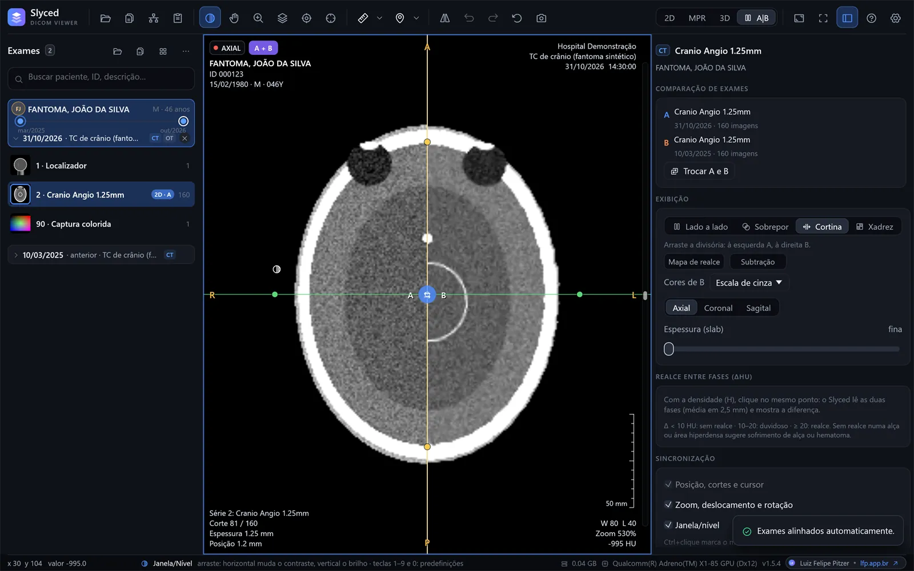
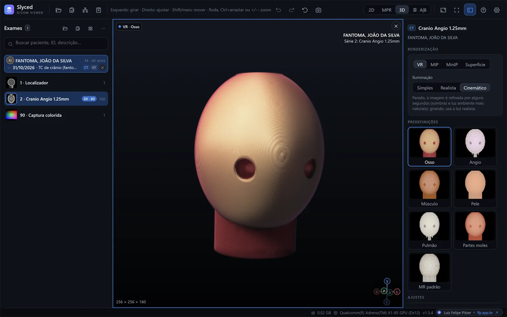

Study comparison
Current and prior side by side, overlaid, as a curtain or a checkerboard, aligned automatically (by frame of reference, landmarks or mutual information), with the change in each measurement as a percentage.

CT, MR, X-ray and ultrasound straight from the CD, a folder, a ZIP file or the PACS. A single Slyced.exe of about 20 MB, from Windows 7 to 11. Or right in the browser.
No scan at hand? Try it with a synthetic study → The interface is in Brazilian Portuguese.

a single executable, no installer
packages: x64, ARM64 and Windows 7 in 64 and 32 bits
from Windows 7 to Windows 11
sent without you asking: no telemetry, no accounts
Scroll down and see what Slyced does with a study.
Axial, coronal and sagittal linked by a crosshair, as in Slyced. Drag on any plane and watch the other two follow.
A synthetic phantom computed right on this page, with skull, ventricles, contrast-filled vessels and a small lesion. In Slyced the same works on real studies, with MIP/MinIP slab, oblique planes and curved reformation.

From the hospital CD to the PACS, from measurements to comparison with the prior study: the everyday tools, with no sign-up and nothing to install.
Current and prior side by side, overlaid, as a curtain or a checkerboard, aligned automatically (by frame of reference, landmarks or mutual information), with the change in each measurement as a percentage.

C-FIND, C-GET and C-MOVE with a built-in receiver, or DICOMweb. Download queue, automatic cleanup and a timeline with every study of the patient.

VR with presets (bone, angio, skin, lung…), MIP, MinIP and surface; cropping and simple, realistic or cinematic lighting.
Slab with MIP, MinIP or average, oblique planes and a tube tracker for appendix, ureter, bile duct and vessels.
Distance, angle, elliptical ROI, density in HU with the likely tissue, and volume from three diameters.
Highlights for free air, mesenteric fat and stones; phases with and without contrast (ΔHU and subtraction) and an incisional hernia calculator.
Folders, CDs/DVDs with DICOMDIR and ZIP files without extracting. JPEG (12-bit, lossless, arithmetic), JPEG-LS, JPEG 2000, RLE, multiframe and color.
F11 leaves only the image; the controls come back when the mouse moves. Dark, light or high-contrast themes.
Runs from the download or a USB stick: no installer, no administrator rights, no Visual C++ Redistributable.
The same code becomes the Windows executable and the WebAssembly of the web version. Slices are read in parallel, and everything 3D is drawn by the graphics card.
Pick the package for your Windows on the latest release page, or use the web version with nothing to download.
The packages are not digitally signed yet: if Windows shows “Windows protected your PC”, click More info → Run anyway. Check the file against the release's SHA256SUMS.txt. Details in the manual (Portuguese).
Download Slyced, extract it and run Slyced.exe. Click Abrir pasta (Open folder) and pick the CD drive, or drag the CD folder onto the window: it finds the DICOMDIR and lists the studies, with nothing to install. Without a CD drive, copy the disc to a USB stick or a ZIP file, which Slyced opens without extracting.
Yes. Slyced has packages for Windows 7 SP1, 8 and 8.1, 64-bit and 32-bit, as well as Windows 10 and 11 (x64 and ARM64). It is free and open source.
Yes, with the experimental web version. Files are read by the browser itself and never uploaded to any server. It does not support PACS or JPEG-LS yet.
No. There is no telemetry, no account and no automatic update check. The program only connects to the PACS servers you set up, and only when you search or download a study.
CT, MR, X-ray and ultrasound DICOM files from folders, CDs/DVDs with DICOMDIR and ZIP files. It reads uncompressed images and JPEG (including 12-bit and lossless), JPEG-LS, JPEG 2000 and RLE, multiframe and color.
Yes: axial, coronal and sagittal MPR with oblique planes and slab (MIP, MinIP or average), curved planar reformation (CPR) and GPU volume rendering with VR, MIP, MinIP and surface modes.
The interface is in Brazilian Portuguese for now. The workflow follows the usual conventions of DICOM viewers, and this page, the README summary and the source code are available in English.
Slyced is not certified as a medical device (ANVISA, FDA or CE). Use it to view and study images, not as the sole basis for a diagnosis.